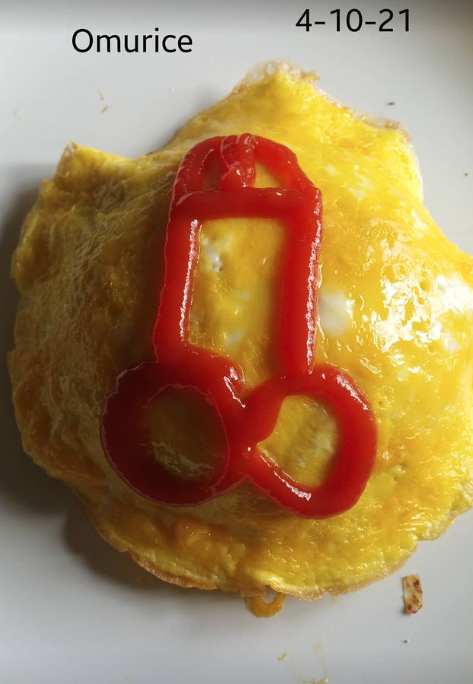

Omurice

Made by me
This tasty dish is a staple of Japanese comfort food. it is super yummy
It features an ketchup-decorated omlet on top, and a fried rice ketchupy-tasting mixture under it. Hence the name omu="omlet" and rice=fried rice
*all this was done from memory*
Ingredients
- onion
- carrot
- raw chicken (or leftover rotisserie)
- soy souce
- oyster sauce
- ketchup
- cooked rice (can be leftover)
- egg
Steps
- cut up onion, carrot, chicken
- put soy sauce on chicken in bowl
- coat pan with vegetal oil and put onions on, medium heat
- put chicken on pan
- put rice, carrot, whatever u want on pan
- put 1 tbsp of oyster sauce and about 1tbsp ketchup (however much you want), mix thoroughly
- place in bowl and flip upside down on another plate
- make omelet
- put omlet on rice
- draw something cool on the omelete with ketchup